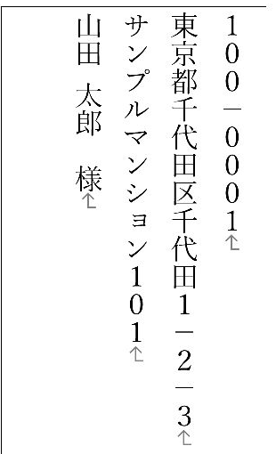
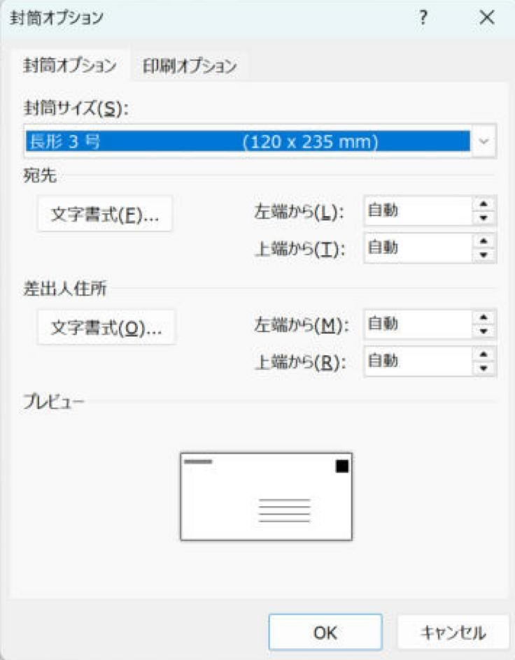
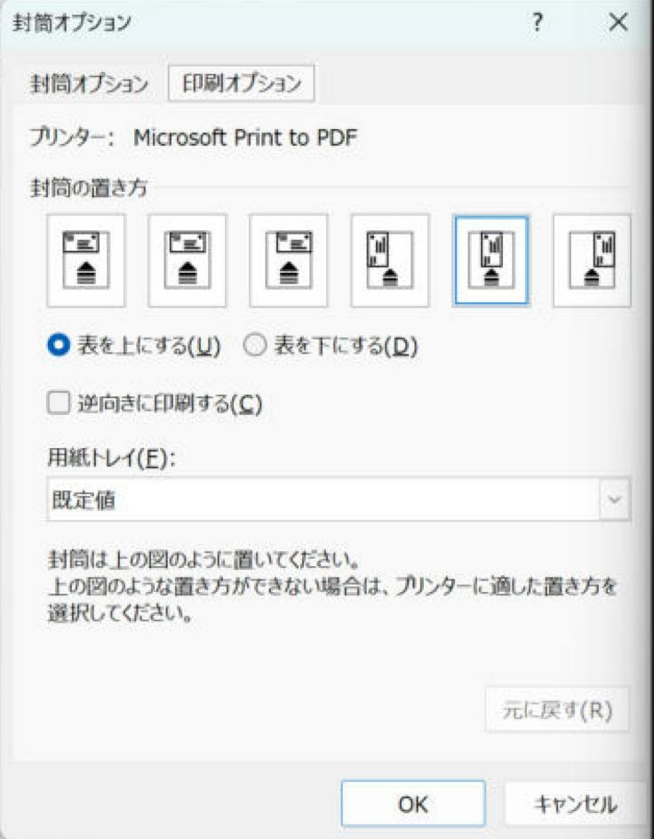

Word差し込み印刷で長形3号の封筒に縦書きで宛名を入れる方法
A4の書類を三つ折りで入れる長形3号（120×235mm）の封筒に、Excelの住所録から縦書きで宛名を印刷します。
「封筒」で長形3号を選び、縦書きテキストボックスに宛名を入れます。半角数字が横に寝る場合は、Excelに全角の印刷用列を作って差し込みます。
ふつう（Lv.3）
- 長形3号を選ぶ
- 宛名枠を作る
- 印刷用列を挿入
- 全員分を確認
目次
完成イメージと、実際に起きたこと
「封筒」機能で封筒の大きさは選べますが、そのままでは横書きです。実際のWordで作ると、次の2つが起きました。この記事ではその直し方まで説明します。
- 宛先の枠が縦書きにならなかった
- 半角の数字が横に寝た

操作の順番
封筒サイズを選ぶ → 住所録を接続する → 縦書きの宛名枠を作る → 印刷用列を挿入する → 全員分を出す、の順です。封筒機能の枠をそのまま使える場合は、追加の枠を作る必要はありません。
撮影画像の全角化はDBCHARを使った例です。通常の手順ではExcel側で表記を整えます。画像は配置や数字の向きを見る資料として参照してください。
住所録（Excel）の準備
撮影には、氏名・敬称・郵便番号・住所_1・住所_2・会社・部署の列を持つExcelの住所録を使いました（はがき宛名面の記事と同じ住所録です）。
- 郵便番号は文字列で「100-0001」の形にします。
- 住所は、都道府県〜番地（住所_1）と建物名（住所_2）に分けます。
- 敬称の列には「様」「御中」を入れておくと、会社あてと個人あてを1つの住所録で扱えます。
- 保存して、Excelを閉じます。
手順1封筒の差し込みを始めて、長形3号を選ぶ
- Wordの新しい文書で「差し込み文書」タブ →「差し込み印刷の開始」→「封筒」を選びます。
- 「封筒オプション」が開きます。「封筒サイズ」の一覧から「長形 3 号（120 x 235 mm）」を選びます。

- 「印刷オプション」タブで、プリンターに封筒をどの向きで入れるかを選びます。

- 「OK」を押します。封筒の大きさの文書（横向き）ができ、中央付近に宛先を入れる枠ができます。
- 「宛先の選択」→「既存のリストを使用」で、Excelの住所録とシートを選びます。
手順2縦書きテキストボックスに宛名を入れる
- 「レイアウト」タブ →「文字列の方向」→「縦書き」を選びます。用紙が縦長の向きに変わります。
- 撮影した環境では、封筒機能が作った宛先の枠の中の文字は横書きのままでした。そこで、宛先は縦書きのテキストボックスに入れます。
- 「挿入」タブ →「テキスト ボックス」→「縦書きテキスト ボックスの描画」を選び、封筒の右寄りに、宛名を入れる範囲をドラッグして作ります。
- テキストボックスの中をクリックし、「差し込み文書」タブ →「差し込みフィールドの挿入」から、次の順にフィールドを入れます。行の終わりでEnterを押します。
| 行 | 入れるもの |
|---|---|
| 1行目 | «住所1_縦書き用» |
| 2行目 | «住所2_縦書き用» |
| 3行目 | «会社» «部署» |
| 4行目 | «氏名» «敬称» |
- テキストボックスの中を全部選んで、文字を大きくします。氏名の行だけをさらに大きくすると、宛名らしい見た目になります（この記事の画面は、全部の行が同じ大きさです）。
- テキストボックスの枠線は、「図形の書式」タブ →「図形の枠線」→「枠線なし」で消せます。
- 封筒機能が作った横書きの枠は、中身を消して空にしておきます。
手順3縦書き用の数字はExcelの印刷用列で整える
半角数字が横向きになる場合は、Excelに縦書き印刷用の列を作ります。元の住所は残し、追加列へ全角表記を用意して差し込みます。
- Excelへ「住所1_縦書き用」「住所2_縦書き用」を追加します。
- 元の住所がF2なら、印刷用の2行目に
=IF(F2="","",JIS(F2))を入力し、最終行までコピーします。 - JISは数字だけでなく英字や半角カナも全角に変えます。建物名の英字などを変えたくない場合は、印刷用列へ必要な数字だけを全角にした文字列を入力します。
- Excelを保存し、Wordの宛先を選び直します。テキストボックス内の元の住所フィールドを、追加した印刷用列へ置き換えます。
確認プレビューで数字とハイフンの向きを確認します。ハイフンは全角にしても横棒のままで表示されることがあります。縦棒にしたい場合は、住所録の書き方を変えます。
手順4郵便番号は横書きの枠で赤い枠に合わせる
封筒に印刷された郵便番号の枠に1桁ずつ合わせるため、郵便番号だけを別の枠に入れます。宛名の行には入れません。
- 「挿入」→「テキスト ボックス」→「横書きテキスト ボックスの描画」で、封筒の右上に枠を作ります。
- 枠の中をクリックし、「差し込みフィールドの挿入」で郵便番号の列を選びます。ハイフンのない7桁の列を使います。住所録の郵便番号がハイフン付きなら、
=SUBSTITUTE(C2,"-","")のような列を足します（印刷用列の作り方）。 - 文字を選び、「ホーム」→「フォント」の詳細設定 →「文字間隔」で、数字が枠の間隔に合うように広げます。
- 枠線を「枠線なし」にします。
枠の位置は封筒の製品によって違います。普通紙で試し印刷して、封筒に重ねて合わせます。
手順5確認して印刷する
- 「結果のプレビュー」の ▶ で何人か切り替え、長い住所や会社名が枠に収まっているかを確認します。
- 「完了と差し込み」→「個々のドキュメントの編集」で「すべて」を選び、「OK」で全員分の文書を作ります。1枚ずつ確認します。
- 完成文書の「ファイル」→「印刷」で、長形3号・用紙の向き・プリンターを確認します。
- 封筒と同じ大きさに切った普通紙か、封筒1枚で試し印刷し、位置を確かめます。封筒の給紙方向はプリンターの説明に従います。
確認宛名の欠けと向きが正しければ残りを印刷します。画面確認だけで本番を一括印刷しません。
封筒を入れる向きや印刷できる範囲はプリンターによって違います。
よくあるつまずき
| 症状 | 確認すること |
|---|---|
| 縦書きにしても宛先が横書きのまま | 封筒機能が作った枠の中は横書きのままになることがあります。縦書きテキストボックスに入れ直します。 |
| 数字が横に寝る | Excelの縦書き用の列を挿入しているか確認します。 |
| 封筒の裏や逆さに印刷される | 「封筒オプション」→「印刷オプション」の置き方と、表を上／下にする設定が、プリンターの入れ方と合っているか。 |
実機で確認した内容
- 確認日：2026-11-03
- 環境：Windows版 Word / Excel（Microsoft 365）
- 確認した範囲：画面上のプレビュー。
JISで「東京都1-2-3ABCｱ」は「東京都１－２－３ＡＢＣア」になる。封筒サイズの文書で4人が4ページになる。 - 確認していないこと：紙・封筒への印刷、郵便番号の枠との位置合わせ。環境により結果が異なる場合があります。
更新履歴
- 2026-11-03：本文を書き直し。郵便番号を枠に合わせる手順を追加し、全角化をJIS関数に統一。